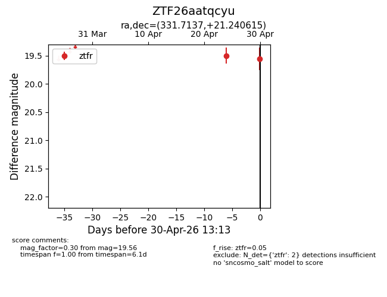
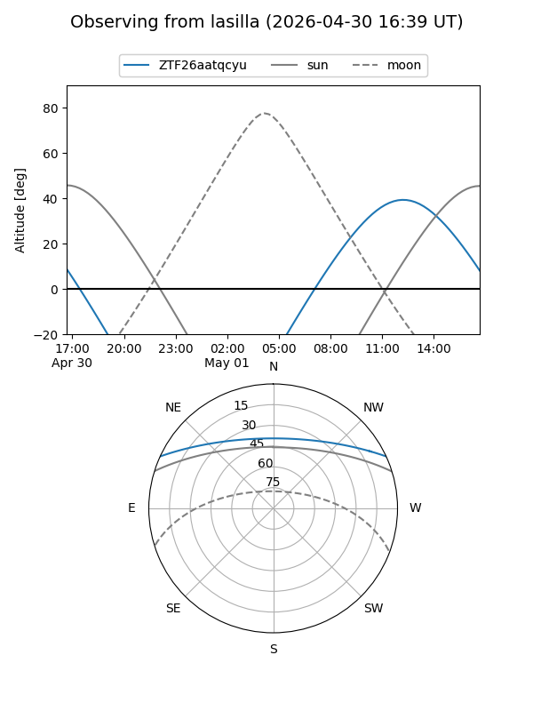
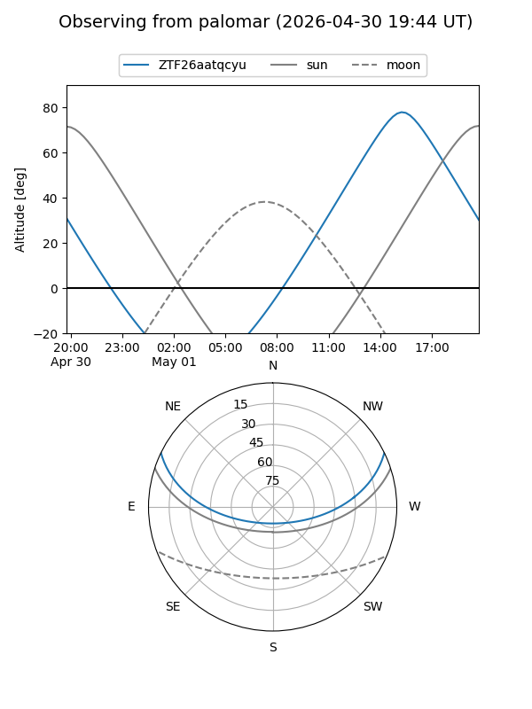

ZTF26aatqcyu
Target ZTF26aatqcyu at 2026-04-30 13:19
Aliases and brokers:
FINK: link
Lasair: link
ALeRCE: link
alt names
ZTF26aatqcyu (ztf,fink_ztf)
Coordinates:
equatorial (ra, dec) = 331.7137,+21.24062
equatorial (HMS+DMS) = 22:06:51.28,+21:14:26.22
galactic (l, b) = (79.2638,-27.35291)
Flags:
Photometry:
last ztfr=19.56
2 ztfr detections
Lightcurve

Visibility


Additional plots